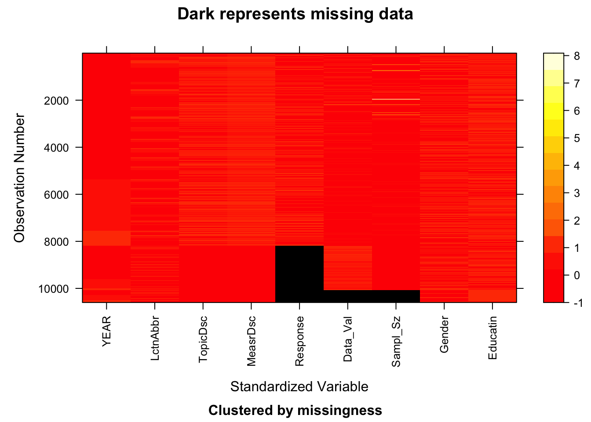

The only dataset used for this project is the Youth Tobacco Survey (YTS) Data, provided by the Office on Smoking and Health within the National Center for Chronic Disease Prevention and Health Promotion at the Centers for Disease Control and Prevention (CDC). The dataset can be directly accessed online at Youth Tobacco Survey (YTS) Data.
The YTS Data is derived from the web-based National Youth Tobacco Survey (NYTS), administered annually by CDC. The survey covers various aspects, including tobacco use, exposure to environmental tobacco smoke, smoking cessation, school curriculum, minors’ access to tobacco products, knowledge and attitudes about tobacco, and exposure to pro-tobacco and anti-tobacco media messages. A two-stage cluster sample design was employed to produce representative samples of students in middle schools (grades 6–8) and high schools (grades 9–12). The first stage involves selecting schools with probability proportional to their enrollment size, while the second stage randomly selects classes from the selected schools. All students in the chosen classes are eligible to participate in the survey, and a minimum overall response rate of 60% is required. NYTS has been conducted since 1999, and the YTS Data synthesizes the results from 1999 to 2017.
YTS dataset is provided in a tabular format in CSV or Excel format and can be directly imported into R. The dataset was published on June 3, 2014, with the latest update on June 7, 2018. The metadata was last updated on August 25, 2023. It contains 10600 observations with 31 variables. We primarily focus on variables representing state, year, gender, education level, smoking status, type of tobacco used, and cessation efforts.
We also identified some potential issues with the data. First, there are some columns (TopicId, MeasuredId, StratificationID…) generated from the sampling process, which are irrelevant to the tobacco usage and cessation. Thus, these columns will be excluded in the analysis. Secondly, the dataset both gives the sample size of the youth who share the same smoking status under a given condition and the percentage of it among the total population. Considering the substantial variability in sample sizes based on different populations in schools and states, our emphasis will be on percentage values rather than sample size. Thirdly, in the gender column, the responses are female, male, and overall. Sample size of female and male do not exactly add up to the overall sample size, as other gender types are included. However,only binary genders (female and male) will be considered for comparisons, given the small sample sizes for non-binary genders. Additionally, due to missing data for certain states in specific years, temporal analysis may need to be conducted state-wise
2.0.2Research plan
In this section, we will first provide a brief introduction to our dependent and independent variables. We will then discuss the target values of interest that our data enables us to explore, followed by an examination of patterns that can be explored using demographic independent variables.
Our primary dependent variable is “Data_Value”, representing the percentage of students who share the same smoking status among the entire student population with similar features. In other words, holding other features constant in an observation (Year, Location, education, and gender), “Data_Value” provides the percentage of students with the given smoking status, including type of tobacco, user status, and frequency response.
Regarding independent variables, we have general demographic variables such as gender, education, states, and year of the survey. Additionally, we have variables related to smoking status, including the type of tobacco (smokeless cigarettes or not), user status (attempted/thought about quitting or not), and frequency response (how frequently one smokes).
For tobacco usage, we are interested in students’ exposure to tobacco products and their frequency of usage. To explore middle school and high school students’ exposure to tobacco, we will focus on the subset of observations where the Response variable is equal to “Ever.” According to the survey design, students who answered “Ever” reported having tried smoking cigarettes. We will also control for the TopicDesc variable to be either “Cigarette Use (Youth)” to examine student exposure to tobacco. The corresponding values in the “Data_Value” variable can then be interpreted as the percentage of students who reported ever trying smoking cigarettes.
On the other hand, controlling for other variables, we can also explore the tobacco addiction rate among the youth population. Instead of focusing on those who answered “Ever” to the Response variable, we will concentrate on those who reported “Frequent.” The corresponding values in the “Data_Value” variable for those who answered “Frequent” reported having smoked on 20 or more of the 30 days preceding the survey.
While using smoking status-related dependent variables to explore tobacco exposure and addiction among the youth population, we will employ demographic independent variables such as States, Gender, Level of education, and year of the survey to investigate potential disparities in patterns of tobacco usage in the youth population. Specifically, we will:
Explore youth tobacco exposure and addiction rates over time, examining variations in gender and education levels.
Investigate youth tobacco exposure and addiction rates across states, analyzing variations in gender and education levels.
Examine the influence of gender and education on tobacco exposure and addiction rates within a specific state and year.”
Rows: 10600 Columns: 31
── Column specification ────────────────────────────────────────────────────────
Delimiter: ","
chr (24): LocationAbbr, LocationDesc, TopicType, TopicDesc, MeasureDesc, Dat...
dbl (7): YEAR, Data_Value, Data_Value_Std_Err, Low_Confidence_Limit, High_C...
ℹ Use `spec()` to retrieve the full column specification for this data.
ℹ Specify the column types or set `show_col_types = FALSE` to quiet this message.
We will remove variables with single unique observations and variables that are repetitive in nature.
Code
library(tidyverse)# We now remove variables with single observation data <-Filter(function(x)(n_distinct(x)>1), data)# use only the independent and dependent variable mentioned abovedata_bf <-subset(data, select =c("YEAR", "LocationAbbr", "TopicDesc", "MeasureDesc", "Response","Data_Value","Sample_Size", "Gender", "Education"))# Number of missing values in different columnscolSums(is.na(data_bf)) %>%sort(decreasing =TRUE)
NOTE: The following pairs of variables appear to have the same missingness pattern.
Please verify whether they are in fact logically distinct variables.
[,1] [,2]
[1,] "Data_Value" "Sample_Size"
Code
image(x,greyscale=FALSE)

From above graph, we can clearly see that Response, Data_value, Sample_Size are the only three variables with missing values. Data_Value and Sample_Size seem to have the same missing value pattern. In other words, when Sample_Size is missing, Data_Value is also missing, which is reasonable to observe.
However, since we have a very large dataset, heapmap is the not the best to visualize the missing value patters. We will use plot_missing() function.
From the upper marginal graph, it is evident that the variable “Response” contains a larger number of missing values. This occurrence is attributed to one of the “TopicDesc” values being set to “Cessation,” which aims to capture students’ willingness and attempts to quit tobacco usage. Consequently, the “Response” variable, which is utilized to record the frequency of tobacco usage, is left as missing in the dataset.
From the main graph, we can confirm that Data_Value and Sample_Size share the same missing value pattern. In pattern 2, the sole missing value is observed in the “Response” variable, as mentioned earlier, due to its purpose in capturing tobacco cessation.
In pattern 3, all three variables—Response, Data_Value, and Sample_Size—are missing. Further investigation, referencing the code book and dataset, reveals that this situation arises from a very limited number of samples. This is predominantly the case when narrowing down the analysis to either females or males, coupled with the “TopicDesc” value set to “Cessation.”
Pattern 4, where only “Data_Value” and “Sample_Size” are missing, does not exhibit such occurrences. Verification can be conducted by the following:
Code
data_bf |>filter(Value ==NA& Sample ==NA& Res !=NA)
# A tibble: 0 × 9
# ℹ 9 variables: YEAR <dbl>, State <chr>, Topic <chr>, Measure <chr>,
# Res <chr>, Value <dbl>, Sample <dbl>, Gender <chr>, Edu <chr>